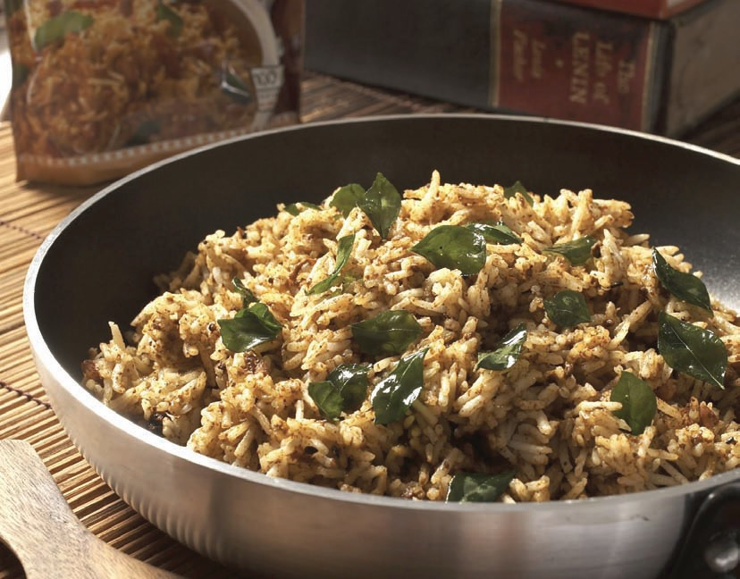
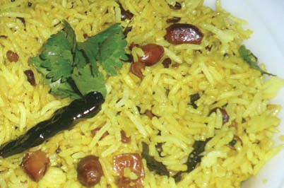
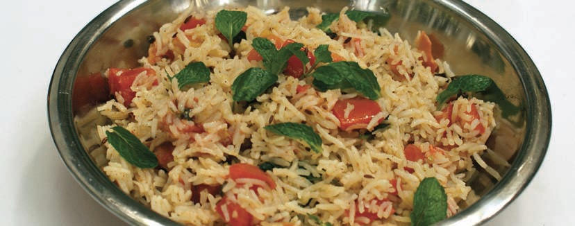

|
|
TAMARIND RICE WITH RAITA
 |
INGREDIENTS
1½ cups Rice, cleaned, washed and
soaked for 1 hour
3 cups Water
1/3 cup Oil
4 tbsp Puliyogare rice, ready-made mix
FOR RAITA
2 cups Curd
1 cup Grated cucumber, water squeezed out
1 tsp Pani puri masala
1 tsp Mild red chilli powder
1½ tsp Cumin seeds, roasted and
ground to a powder
METHOD
Place rice and water in a large bowl and microwave,
covered, on HIGH for 12 minutes or until cooked
through. Keep aside. In a bowl, mix the oil and the
Puliyogare powder. Microwave on HIGH for 30
seconds. Mix in the cooked rice until all the powder
is absorbed and well distributed.
FOR RAITA
Whisk the curd in a bowl. Add the grated cucumber
and pani puri masala. Stir well. Sprinkle with red
chilli powder and roasted cumin. Chill. Serve along
with the hot tamarind rice. |
Tip: After cooking, to release the hot steam safely, lift container lids and wraps
carefully, facing away from you. Be careful not to burn yourself. |
LEMON RICE
 |
INGREDIENTS
1½ cup Rice, cleaned, washed and
soaked for 1 hour
3 cups Water
1 tsp Salt
¼ cup Lemon juice
2 tbsp Oil
2 tsp Mustard seeds
2 tsp Dhuli Urad Dal, broken
1 tsp Chana Dal
2 Dry red chillies, broken
6–8 Curry leaves
¼ tsp Turmeric powder
¼ cup Fresh coriander leaves
A pinch of asafoetida
METHOD
Place rice, salt and water in a large bowl. Microwave,
covered, on HIGH for 12 minutes or until cooked
through. Add lemon juice. Stir well. In another bowl,
pour the oil. Add mustard seeds, both the dals,
chillies, curry leaves, asafoetida and turmeric.
Microwave for 2 minutes. Remove. Pour over the hot
rice. Garnish with coriander. Serve hot. |
Tip: Add a few drops of
lemon juice to the water
before boiling rice to make
the grains whiter. |
TAMATAR AUR MINT KA PULAO
 |
INGREDIENTS
1 cup Long-grained Basmati rice
1 cup Tomato, diced
10 gm Mint leaves
2 Cloves
½" pc Cinnamon
2 Cardamoms
1 Bay leaf
1 tsp Garam masala powder
1 tsp Cumin powder
2 tbsp Oil
Salt to taste
METHOD
Clean and wash rice. Soak in warm water for about
10 minutes. Drain and keep aside. Combine oil,
cloves, cinnamon, cardamoms and bay leaf in a glass
bowl. Microwave on HIGH for 2 minutes. Add
tomatoes and mint. Microwave on HIGH for 1 more
minute. Add rice. Mix well. Microwave on HIGH for 1
minute. Add 2 cups of hot water to the rice mixture
along with salt. Mix well. Add garam masala and
cumin powder. Microwave on HIGH for 10 minutes,
stirring twice in-between every 4 minutes. Garnish
with fresh mint leaves. Serve hot. |
|
|

|
|
.jpg)